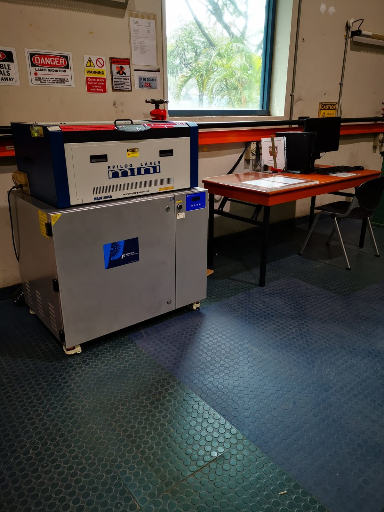

Operating Hour
Mon - Fri : 0900 – 1200, 1300 – 1700 (excluding PH)
Lunch hour: 1200 – 1300 (Closed)
Material Store Operating Hour
Mon - Fri : 1000, 1400 & last 1500 (excluding PH & Lab closure for special events)
When entering this workshop
- Sign in at the entrance.
- Pick up PPE you need and inform workshop staff that you are going to work in the workshop.
When exiting this workshop
- Check that any tools you have been using have been put away in the appropriate spots, cleaned up your work area and notify the workshop staff before you leave this workshop.
- Sign out at the exit.
We are staff supporting you in this workshop

Approach any of us during operating hour
if you need any help.
Students/non workshop staff are not permitted in the office of the workshop.
If tools are required, ask the workshop staff for assistance.
Our Workshop Safety Rules
Workshop safety is everyone's responsibility,
the following rules have been put in place to ensure the safety of all students and staff.
Please read the safety rules carefully and submit Safety Awareness Form to our staff before working in this workshop.
- Students feeling unwell that may affect workplace safety, must report these conditions to the workshop staff.
- No food or drink in the workshop.
- Wear the correct protective equipment for the tools you are using – ask if in doubt.
- Before using any chemical, check with workshop staff.
- Notify workshop staff immediately of any faulty or broken equipment.
- Check with workshop staff on how to use the tools safely.
- Ensure your work piece is securely fixed before work commences.
- Keep electrical wires and tools off the floor.
- Keep clear of any person operating tools and machinery (bumping an operator or get tangled in the lead could cause serious injury to you or the operator).
- Do not talk to anyone or using mobile phone while operating electrical equipment and machinery.
- Keep your work area tidy.
- Clean up any spills immediately.
- Do not allow any machine to run unattended.
- Never attempt to stop any rotating spindle of any machine with your hands.
- Stop machine completely, before making any measurement or adjustment.
Download the Safety Awareness Form

Clothing, footwear and PPE
- Safety glasses and hearing protection - these items can be found at the entrance of this workshop, return them after use.
- Students that wear glasses should be aware these are not safety glasses, they are only impact resistant and may shatter, safety glasses must be worn.
- Skirts, Bermudas, three-quarter pants, scarf & sleeveless top are not allowed.
- All loose clothing (eg shirts hanging out) must be tucked in.
- Closed toe shoe must be worn in the workshop. Do not enter under any circumstances without this footwear, there are no exceptions to this rule.
- Long hair has to be tied up.
- Remove rings and loose jewellery before operating machinery they can be a hazard.
Behaviour while working in this workshop
Fooling around and practical jokes in the workshop will not be tolerated. These students will be told to leave.
First Aid
All accidents, cuts and abrasions must be reported before leaving the workshop. If an accident does happen, no matter how small, it must be reported to the workshop staff immediately.
Fires or other emergencies
Think before reacting to any emergency in the workshop, ensure you are reacting safely before you assist in an emergency. Do not attempt to fight any fire unless you have been trained to do so.
Machinery usage
When students are operating machinery all other students are to stay clear and not to talk to the operator. If you feel uneasy or unsafe operating any tools or machinery in the workshop, inform the workshop staff and help will be provided.
Laser Machine
Laser machine in this workshop may be used by students or staff as long as they had attended the safety training conducted by Makerspace+. Status can be checked using the below link.
Hand and Power Tool Safety video
Click here to watch
Tool Loan
Students are encourage to utilise workshop for fabrication.
Toolbox containing general tools are available for loan at the service counter, if required.
Loaning of tools
Approach our staff at the service counter for the tools that you need.
Student matriculation card will be retained till the tool is returned.
Returning of tools
Ensure tool return is clean and in good working condition.
Reasonable wear & tear is acceptable. Any lost tool will have to be replaced by borrower.
If original brand & model is not available, workshop staff to decide whether replacement tools of other model & brand is acceptable.
Guides on Tools and Machines
Guide on Rivet
Click here to watch
Revit and reviting tools is available in tools cabinet.
We have two types of revit size in our workshop ?? and ??.
Common Type of Pliers
Click here to watch
General pliers is available in our workshop.
Screw and Screw Driver
Click here to watch
General screw driver is available in our workshop.
Epilog Laser Mini 24

Reservation and usage of Laser Machine in EN16 workshop
- Booking for use of machine via email to: Seah Kwee Teck
- Staff can book up to 8 hours per week, from 9am to 12noon & from 1pm to 5pm.
- Staff may continue to use the machine, if machine is available.
- For first time user, staff is required to sign a copy of the machine safety checklist.
- Sign out machine key from workshop Technical Staff (TS).
- Be familiar with the operation procedure, before switching on machine.
- Clean up machine after use.
- Lock machine & return key to workshop TS.
- Obey all safety rules & signs.
Read the below documents :
Steps in operating Epilog Mini 24 Laser Cutting Machine
the Standard Operating Procedure(SOP)
Machine setting for Acrylic material